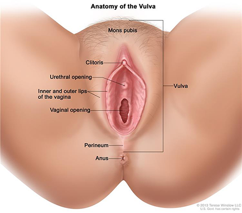

Vaginal yeast infections
Most women will get a vaginal yeast infection at some point in their life. Symptoms of vaginal yeast infections include burning, itching, and thick, white discharge. Yeast infections are easy to treat, but it is important to see your doctor or nurse if you think you have an infection. Yeast infection symptoms are similar to other vaginal infections and sexually transmitted infections (STIs). If you have a more serious infection, and not a yeast infection, it can lead to major health problems.
What is a vaginal yeast infection?
A vaginal yeast infection is an infection of the vagina that causes itching and burning of the vulva, the area around the vagina. Vaginal yeast infections are caused by an overgrowth of the fungus Candida.

Who gets vaginal yeast infections?
Women and girls of all ages can get vaginal yeast infections. Three out of four women will have a yeast infection at some point in their life. Almost half of women have two or more infections.1
Vaginal yeast infections are rare before puberty and after menopause.
Are some women more at risk for yeast infections?
Yes. Your risk for yeast infections is higher if:2
- You are pregnant
- You have diabetes and your blood sugar is not under control
- You use a type of hormonal birth control that has higher doses of estrogen
- You douche or use vaginal sprays
- You recently took antibiotics such as amoxicillin or steroid medicines
- You have a weakened immune system, such as from HIV
What are the symptoms of vaginal yeast infections?
The most common symptom of a vaginal yeast infection is extreme itchiness in and around the vagina.
Other signs and symptoms include:
- Burning, redness, and swelling of the vagina and the vulva
- Pain when urinating
- Pain during sex
- Soreness
- A thick, white vaginal discharge that looks like cottage cheese and does not have a bad smell
You may have only a few of these symptoms. They may be mild or severe.
What causes yeast infections?
Yeast infections are caused by overgrowth of the microscopic fungus Candida.
Your vagina may have small amounts of yeast at any given time without causing any symptoms. But when too much yeast grows, you can get an infection.
Can I get a yeast infection from having sex?
Yes. A yeast infection is not considered an STI, because you can get a yeast infection without having sex. But you can get a yeast infection from your sexual partner. Condoms and dental dams may help prevent getting or passing yeast infections through vaginal, oral, or anal sex.
Should I call my doctor or nurse if I think I have a yeast infection?
Yes. Seeing your doctor or nurse is the only way to know for sure if you have a yeast infection and not a more serious type of infection.
The signs and symptoms of a yeast infection are a lot like symptoms of other more serious infections, such as STIs and bacterial vaginosis (BV). If left untreated, STIs and BV raise your risk of getting other STIs, including HIV, and can lead to problems getting pregnant. BV can also lead to problems during pregnancy, such as premature delivery.
How is a yeast infection diagnosed?
Your doctor will do a pelvic exam to look for swelling and discharge. Your doctor may also use a cotton swab to take a sample of the discharge from your vagina. A lab technician will look at the sample under a microscope to see whether there is an overgrowth of the fungus Candida that causes a yeast infection.
How is a yeast infection treated?
Yeast infections are usually treated with antifungal medicine. See your doctor or nurse to make sure that you have a vaginal yeast infection and not another type of infection.
You can then buy antifungal medicine for yeast infections at a store, without a prescription. Antifungal medicines come in the form of creams, tablets, ointments, or suppositories that you insert into your vagina. You can apply treatment in one dose or daily for up to seven days, depending on the brand you choose.
Your doctor or nurse can also give you a single dose of antifungal medicine taken by mouth, such as fluconazole (floo-CON-uh-zohl). If you get more than four vaginal yeast infections a year, or if your yeast infection doesn't go away after using over-the-counter treatment, you may need to take regular doses of antifungal medicine for up to six months.
Is it safe to use over-the-counter medicines for yeast infections?
Yes, but always talk with your doctor or nurse before treating yourself for a vaginal yeast infection. This is because:
- You may be trying to treat an infection that is not a yeast infection. Studies show that two out of three women who buy yeast infection medicine don't really have a yeast infection.2 Instead, they may have an STI or bacterial vaginosis (BV). STIs and BV require different treatments than yeast infections and, if left untreated, can cause serious health problems.
- Using treatment when you do not actually have a yeast infection can cause your body to become resistant to the yeast infection medicine. This can make actual yeast infections harder to treat in the future.
- Some yeast infection medicine may weaken condoms and diaphragms, increasing your chance of getting pregnant or an STI when you have sex. Talk to your doctor or nurse about what is best for you, and always read and follow the directions on the medicine carefully.
How do I treat a yeast infection if I'm pregnant?
During pregnancy, it's safe to treat a yeast infection with vaginal creams or suppositories that contain miconazole or clotrimazole.
Do not take the oral fluconazole tablet to treat a yeast infection during pregnancy. It may cause birth defects.3
Can I get a yeast infection from breastfeeding?
Yes. Yeast infections can happen on your nipples or in your breast (commonly called "thrush") from breastfeeding. Yeast thrive on milk and moisture. A yeast infection you get while breastfeeding is different from a vaginal yeast infection. However, it is caused by an overgrowth of the same fungus.
Symptoms of thrush during breastfeeding include:
- Sore nipples that last more than a few days, especially after several weeks of pain-free breastfeeding
- Flaky, shiny, itchy, or cracked nipples
- Deep pink and blistered nipples
- Achy breast
- Shooting pain in the breast during or after feedings
If you have any of these signs or symptoms or think your baby might have thrush in his or her mouth, call your doctor. Learn more about thrush in our Breastfeeding section.
If I have a yeast infection, does my sexual partner need to be treated?
Maybe. Yeast infections are not STIs. But it is possible to pass yeast infections to your partner during vaginal, oral, or anal sex.
- If your partner is a man, the risk of infection is low. About 15% of men get an itchy rash on the penis if they have unprotected sex with a woman who has a yeast infection. If this happens to your partner, he should see a doctor. Men who haven't been circumcised and men with diabetes are at higher risk.
- If your partner is a woman, she may be at risk. She should be tested and treated if she has any symptoms.
How can I prevent a yeast infection?
You can take steps to lower your risk of getting yeast infections:
- Do not douche. Douching removes some of the normal bacteria in the vagina that protects you from infection.
- Do not use scented feminine products, including bubble bath, sprays, pads, and tampons.
- Change tampons, pads, and panty liners often.
- Do not wear tight underwear, pantyhose, pants, or jeans. These can increase body heat and moisture in your genital area.
- Wear underwear with a cotton crotch. Cotton underwear helps keep you dry and doesn't hold in warmth and moisture.
- Change out of wet swimsuits and workout clothes as soon as you can.
- After using the bathroom, always wipe from front to back.
- Avoid hot tubs and very hot baths.
- If you have diabetes, be sure your blood sugar is under control.
Does yogurt prevent or treat yeast infections?
Maybe. Studies suggest that eating eight ounces of yogurt with "live cultures" daily or taking Lactobacillus acidophilus capsules can help prevent infection.4,5
But, more research still needs to be done to say for sure if yogurt with Lactobacillus or other probiotics can prevent or treat vaginal yeast infections. If you think you have a yeast infection, see your doctor or nurse to make sure before taking any over-the-counter medicine.
What should I do if I get repeat yeast infections?
If you get four or more yeast infections in a year, talk to your doctor or nurse.
About 5% of women get four or more vaginal yeast infections in one year. This is called recurrent vulvovaginal candidiasis (RVVC). RVVC is more common in women with diabetes or weak immune systems, such as with HIV, but it can also happen in otherwise healthy women.
Doctors most often treat RVVC with antifungal medicine for up to six months. Researchers also are studying the effects of a vaccine to help prevent RVVC.
Did we answer your question about vaginal yeast infections?
For more information on vaginal yeast infections, call the OWH Helpline at 1-800-994-9662 or contact the following organizations:
- Centers for Disease Control and Prevention (CDC), HHS
Phone Number: 800-232-4636 - National Institute of Allergy and Infectious Diseases (NIAID), NIH, HHS
Phone Number: 866-284-4107 (TDD: 800-877-8339) - American College of Obstetricians and Gynecologists (ACOG)
Phone Number: 800-673-8444 - Planned Parenthood Federation of America
Phone Number: 800-230-7526
Sources
- Achkar, J.M., Fries, B.C. (2010). Candida Infections of the Genitourinary Tract. Clinical Microbiology Reviews; 23(2): 253–273.
- Ferris, D.G., Nyirjesy, P., Sobel, J.D., Soper, D., Pavletic, A., Litaker, M.S. (2002). Over-the-counter antifungal drug misuse associated with patient-diagnosed vulvovaginal candidiasis. Obstetrics and Gynecology; 99(3): 419–25.
- Soong, D., Einarson, A. (2009). Vaginal yeast infections during pregnancy. Canadian Family Physician; 55(3): 255–256.
- Hilton, E., Isenberg, H.D., Alperstein, P., France, K., Borenstein, M.T. (1992). Ingestion of yogurt containing Lactobacillus acidophilus as prophylaxis for candidal vaginitis. Annals of Internal Medicine; 116(5): 353–7.
- Hu, H., Merenstein, D.J., Wang, C., Hamilton, P.R., Blackmon, M.L., Chen, H., et al. (2013). Impact of eating probiotic yogurt on colonization by Candida species of the oral and vaginal mucosa in HIV-infected and HIV-uninfected women. Mycopathologia; 176(3–4): 175–81.